XDaQuestão
Questões de Biologia
1. A figura ilustra uma possível sequência no processo evolutivo celular, a partir de um procarionte ancestral.

(www.cientic.com. Adaptado)
Tendo em vista o processo ilustrado e as características das células mais evoluídas atuais, é correto afirmar que, ao longo do tempo, houve
2. Uma das semelhanças entre os processos de divisão celular mitótico e meiótico corresponde à existência da etapa anáfase em ambos. Porém, na meiose, ocorrem duas etapas anáfases, enquanto na mitose ocorre apenas uma etapa anáfase. Tal diferença é decorrente da
3. As leveduras Saccharomyces cerevisiae são amplamente utilizadas na fabricação de pães e de bebidas alcoólicas. Esses microrganismos promovem a fermentação, realizada por diversos tipos de fungos para obtenção de energia. No entanto, para que ocorra a via metabólica da fermentação, é necessário que a levedura
4. As fotografias mostram nove etapas do desenvolvimento embrionário humano, desde o óvulo não fecundado (1) até o estágio (9) em que ocorre a nidação no útero materno.
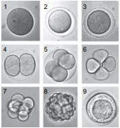(www.laifi.com)
Com relação ao desenvolvimento ilustrado, é correto afirmar que, na etapa
5. Nas cobaias, existem dois pares de alelos com segregação independente, que condicionam, respectivamente, o comprimento e a cor da pelagem. A pelagem longa e marrom é condicionada pelo genótipo duplo recessivo, enquanto as pelagens curta e preta são dominantes para esses fenótipos. O cruzamento entre um macho duplo heterozigoto e uma fêmea dupla recessiva, para esses alelos citados, deverá gerar
6. As moscas das espécies Hemilucilia semidiaphana e Hemilucilia segmentaria são necrófagas e de comportamento e morfologia muito similares, porém diferem em suas taxas de crescimento e maturação. Ambas as espécies podem se apresentar em simpatria, em ambientes florestais naturais, e desse modo ambas podem colonizar um mesmo corpo em decomposição.
Considerando a entomologia forense, pode-se afirmar corretamente que essas espécies serão úteis para
7. Considere a figura a seguir, a qual mostra duas fases da divisão celular mitótica, representadas em A e B.
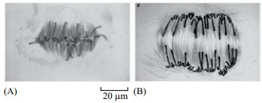(Molecular Biology of the Cell. Alberts e cols, Garland Science, 5.ª ed. 2008)
Com base na figura, é correto afirmar que
8. Considere uma folha de uma planta heliófila e seus diferentes pigmentos fotossintetizantes.
Pode-se afirmar corretamente que a taxa de fotossíntese nessa folha será maior quando iluminada com luz
9. Considere o trecho a seguir.
Em se tratando de ossadas, as perícias buscam identificar
a espécie, o sexo, a idade, a estatura e o tipo racial.
O presente trabalho teve por objetivo a determinação do
sexo de esqueletos humanos, através de um estudo quantitativo,
em que foram realizadas medições de algumas grandezas
lineares dos ossos da pelve, (...). Através dos intervalos
de confiança, os resultados revelaram que as variáveis:
primeira vértebra sacral (largura), diâmetro vertical do
acetábulo, dimensão do forame obturador (comprimento)
e incisura isquiática maior (profundidade) são boas discriminadoras (...).
(Determinação do sexo através de medições em ossos da pelve de esqueletos humanos. Romildo Rabbi. Unicamp, 2000)
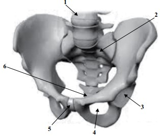(www.medicinadoquadril.com.br. Adaptado)
As vertebras sacrais, o acetábulo e o forame obturador, aos quais o texto se refere, estão indicados, respectivamente, pelos números
10. Considere o trecho a seguir.
A engrenagem da farsa
Lance Armstrong, além de usar substâncias proibidas,
forneceu a seus companheiros de equipe ampolas de EPO
(...). Foi o arquiteto do esquema de contrafação.
(Veja, edição 2293, outubro, 2012. Adaptado)
A reportagem trata do caso de Lance Armstrong, ciclista
recordista norte-americano pego em exame antidoping.
O atleta fazia uso da EPO, uma versão sintética do hormônio
eritropoietina, naturalmente produzido nas glândulas suprarrenais.
Em situações como a descrita, a versão sintética do hormônio eritropoietina é usada para
11. Analise a figura.
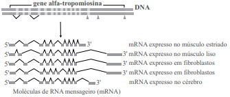(Molecular Biology of the Cell. Alberts e outros, Garland Science, 5.ª ed. 2008. Adaptado)
Pode-se afirmar corretamente que a figura representa o mecanismo de
12. A figura apresentada a seguir é um esquema representativo da herança de um gene que causa uma doença genética, ligado a um polimorfismo no DNA.
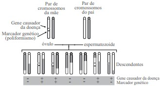(Molecular Biology of the Cell. Alberts e outros, Garland Science, 5.ª ed. 2008. Adaptado)
Analisando a figura, pode-se chegar corretamente à conclusão de que
13. Sequências herdadas no genoma humano podem ser utilizadas na identificação de indivíduos em ciência forense. A figura mostra sequências (representadas por locus 1, locus 2 e locus 3) que foram amplificadas, pela reação em cadeia da polimerase (PCR), em diferentes cromossomos homólogos. As amostras foram em seguida submetidas à eletroforese em gel de agarose e obteve-se o padrão de bandas observado no esquema. As amostras A, B e C são amostras de sangue encontradas nas roupas de três suspeitos de um crime. A amostra F é uma amostra de sangue da vítima.
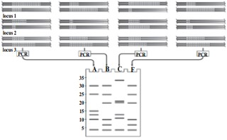(Molecular Biology of the Cell. Alberts e outros, Garland Science, 5.ª ed. 2008)
Pode-se afirmar corretamente que as sequências utilizadas nessa análise são
14. Considere a figura.
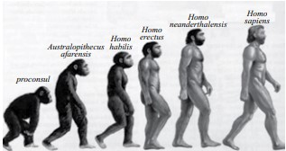(http:///darwinismo.files.wordpress.com.br. Adaptado)
Sobre a adequação da figura para representar a evolução humana, é correto afirmar que é
15. A figura a seguir apresenta um Vórtice de Extinção, representação gráfica de uma situação na qual uma população pequena está sujeita a fatores que a conduzem a tamanhos populacionais cada vez menores, até que não existam mais indivíduos na população, agora extinta.
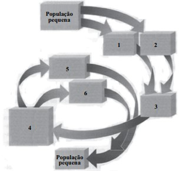(Campbell & Reece, Biologia. Artmed, 8.ª edição, 2010. Adaptado)
Sobre os blocos numerados da figura, os quais representam os fatores que contribuem para levar a população à extinção, pode-se afirmar corretamente que se
16. As figuras 1 e 2 ilustram, respectivamente, os fenômenos ambientais: inversão térmica e tsunami.
Figura 1 (http://ambiente.hsw.uol.com.br)
Figura 2 (http://www.educadores.diaadia.pr.gov.br)
Sobre tais fenômenos ambientais, é correto afirmar que
17. O processo de evolução dos seres vivos ocorre por meio da seleção e da transmissão hereditária de características anatômicas, fisiológicas ou bioquímicas, que se mostram mais aptas à sobrevivência dos indivíduos em seu habitat.
Tendo em vista o neodarwinismo (teoria sintética da evolução), é correto afirmar que as características hereditárias, transmitidas sexuadamente ao longo das gerações de organismos eucariontes, são
18. A figura ilustra uma tipagem sanguínea humana, na qual três gotas de sangue foram colocadas em contato com anticorpos anti-A, anti-B e anti-Rh, posicionados da esquerda para a direita na lâmina, conforme a figura.
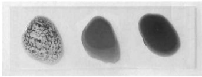(http://www.joseferreira.com.br)
Foi verificada reação apenas com o anticorpo anti-A, o que confere à pessoa testada sangue tipo A Rh-.
A reação observada durante a tipagem sanguínea é uma reação de _________ de hemácias, em que _________ da membrana celular da hemácia reagem especificamente com _________ presentes na lâmina teste.
Assinale a alterativa que completa, correta e respectivamente, as lacunas do parágrafo anterior.
19. Uma determinada raça de cães apresenta pelagem negra ou branca. Cruzando entre si indivíduos de pelagem branca, a prole será sempre branca. Cruzando entre si indivíduos de pelagem negra, pode ocorrer o nascimento de cães de pelagem negra ou branca.
Sabendo que essa característica é determinada por apenas um par de genes alelos autossômicos, é correto afirmar que o nascimento de filhotes brancos, a partir de parentais negros,ocorre
20. A figura ilustra parte do sistema cardiovascular humano. Podem ser visualizados o coração e os vasos sanguíneos de grosso calibre, estando as artérias em cinza claro e as veias em cinza escuro.
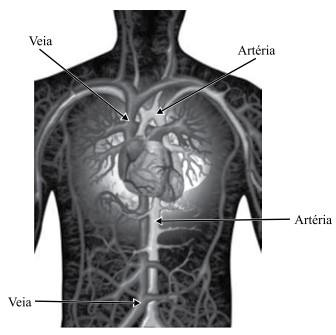(http://www.natureduca.com)
Tendo em vista a fisiologia dos vasos sanguíneos, é correto afirmar que a função exercida pelas
21. No processo de garimpagem em rios brasileiros é utilizado o mercúrio para a formação de amálgamas com o ouro, facilitando assim a identificação desse metal precioso, junto às demais partículas de sedimentos existentes no rio.
Como o ponto de liquefação do mercúrio é menor que o do ouro, basta um maçarico para separar estes dois minerais, obtendo assim o ouro puro.
Tais processos contaminam com esse metal pesado, tóxico para a maioria dos seres vivos, tanto a água dos rios como a atmosfera.
Uma maneira de se constatar uma eventual contaminação ambiental por mercúrio é a análise bioquímica de pelos e penas de predadores de topo dos ecossistemas, em função desse metal apresentar propriedade
22. Observe a figura de uma célula eucariótica.
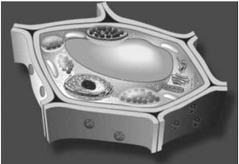(http://recursostic.educacion.es)
As características presentes que permitem sua classificação como pertencente a um vegetal é a presença de
23. Leia a notícia a seguir e responda:
“Traficante é preso em aeroporto com cápsulas de cocaína no estômago. Ele foi detido no Aeroporto de Foz do Iguaçu tentando embarcar para a Espanha. A droga estava dividida em 74 cápsulas, conforme ilustra a figura, as quais foram expelidas em hospital.”
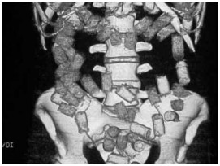(http://g1.globo.com – modificado)
Tendo em vista a fisiologia e a anatomia do sistema digestório humano, assinale a alternativa que apresenta um erro conceitual cometido na redação da notícia.
24. A coloração da pele humana é bastante variável, apresentando inúmeras classificações com relação às muitas tonalidades manifestadas.
Tendo em vista os fatores relacionados à manifestação dos fenótipos existentes para a coloração da pele humana, é correto afirmar que
25. Analise a teia alimentar.
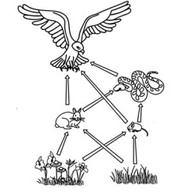(http://zyndteldesigngraphics.blogspot.com.br. Adaptado)
Em relação aos níveis tróficos ocupados pelos seres vivos contidos na teia, é correto afirmar que
26. O núcleo é considerado uma das principais estruturas de uma célula eucariótica. Nele estão contidos os cromossomos, que são formados por
27. A figura ilustra possíveis trocas gasosas que caracterizam dois fenômenos biológicos (A e B) que ocorrem nos vegetais em ambientes naturais.
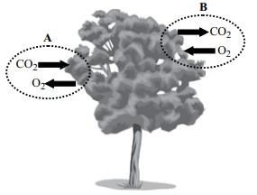Considerando os dois fenômenos biológicos, é correto afirmar que
28. A epidemia de dengue em Campinas (SP) chegou a 5016 casos e outras seis mortes são investigadas, segundo balanço divulgado pela Prefeitura nesta segunda-feira (14.04.2014). Desses, 173 são considerados graves e os pacientes inspiram mais cuidados.
(http://g1.globo.com/sp/campinas-regiao/noticia. Adaptado)
A doença citada no texto é causada por um tipo de
29. A falta de higiene pessoal também pode facilitar o contágio e a permanência de certos fungos. É importante lavar bem as mãos e os pés, com água e sabonete, especialmente entre os dedos, as virilhas e as axilas. Quando uma pessoa transpira muito e permanece com sapatos fechados por muitas horas do dia, é aconselhável o uso de talco medicinal nos pés e entre os dedos.
(Ciências Entendendo a natureza, 7.º ano, César, Sezar e Bedaque. Adaptado)
O texto refere-se a uma doença conhecida como
30. A planária pertence ao filo dos platelmintos, e a lombriga pertence ao filo dos nematódeos, antigamente classificados como asquelmintos. Analisando a anatomia desses animais, é correto afirmar que a planária e a lombriga
31. Baleias, cachalotes, orcas, golfinhos e botos são os principais exemplos de mamíferos aquáticos. Embora estejam nesse ambiente, possuem muitas semelhanças com os mamíferos terrestres. Dentre essas semelhanças, é correto citar:
32. Considere a sequência que indica os níveis de organização biológica:
molécula → organela → X → tecido → órgão → Y → organismo.
Os níveis de organização indicados por X e Y são, respectivamente,
33. A figura representa um tipo de plano de divisão do corpo humano.
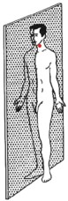O plano de divisão é o
34. A pele é formada pela epiderme e derme. A epiderme é a região mais externa da pele e é formada por células achatadas, sendo que as mais superficiais, quando morrem, formam camadas de queratina, que atuam
35. Escoliose, lordose e cifose são alguns tipos de problemas que podem ocorrer
36. A respeito da circulação humana, é correto afirmar que
37. A ureia, um tipo de excreta nitrogenada, é produzida e lançada no sangue e passa por uma sequência de órgãos até sair do corpo humano. A sequência de órgãos do sistema urinário pelos quais a ureia deve passar é:
38. São exemplos de doenças passíveis de vacinação:
39. A figura representa, de forma simplificada, o olho humano.
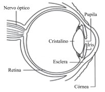(www.netce.com/coursecontent.php?courseid=788. Adaptado)
A respeito da fisiologia da visão, é correto afirmar que
40. O corpo humano é coordenado pelos diversos hormônios secretados por glândulas endócrinas. Uma delas é a suprarrenal, que produz e secreta a adrenalina. Esse hormônio pode provocar no corpo
41. O sistema genital feminino é formado pelos seguintes componentes:
42. Os movimentos respiratórios de inspiração e expiração são controlados por uma região do sistema nervoso chamada
43. A figura representa um importante órgão que atua na digestão humana.
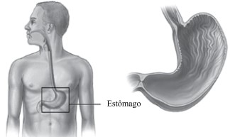(http://www.webmd.com)
A respeito do órgão destacado, é correto afirmar que ele
44. Assinale a alternativa que apresenta, correta e respectivamente, uma forma considerada segura, que permite evitar doenças sexualmente transmissíveis, e duas dessas doenças.